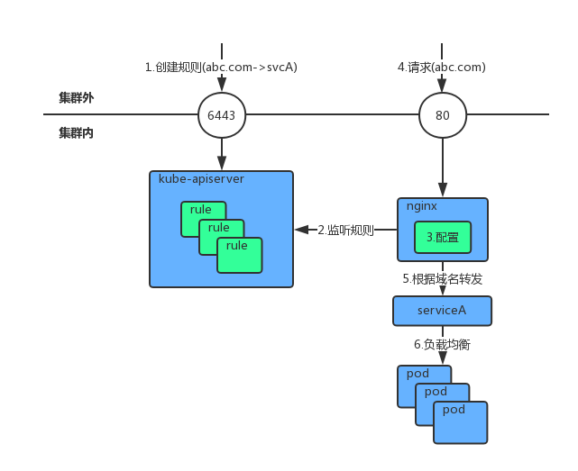

k8s 暴露服务#
在k8s集群中向外暴露服务目前官方支持两种方式：NodePort和Ingress，前者简单粗暴，而后者更高级优雅，那是不是前者就可以被抛弃了？至少目前来看不是的，它们都各有优势和不足，通常情况下需要两者配合使用来满足所有场景，必要时还需要修改自己的业务模块来支持k8s平台，下面我们从使用方法上和优缺点方面细说这两种方案。
NodePort#
原理#
这种方法其实类似于docker run命令中的-p选项，只不过在Kubernetes中用kube-proxy组件代替了Docker的-p的功能，并且是定义在service中，其原理是通过操作系统的iptables来将物理机上指定端口的数据转发到对应的Pod内。
使用#
下面是定义一个NodePort类型的Service：
apiVersion: v1
kind: Service
metadata:
name: spark-driver
spec:
type: NodePort
externalIPs:
- "10.100.100.100"
ports:
- port: 7070
name: master
- port: 4040
name: appui
selector:
app: spark-driver-pod10.100.100.100是k8s集群中某节点的物理IP地址，然后我们就可以通过10.100.100.100:4040访问到app: spark-driver-pod这个Pod的4040端口。
限制#
很快你就会发现这种方式会有一个问题，当我们在k8s中创建了多个一样的服务，并且都需要访问它们的4040端口和7070端口时，我们需要为每个服务都绑定一个物理IP，而集群中的节点是有限的，很快就没有IP可以用了，这时候有两种变通的方法：
- 把上面yaml文件定义中的4040改为其它端口，比如：4041、4042，由于每个服务映射出来的端口不一样，这时需要我们通过其它手段把这些信息记录下来，用户才知道怎样访问自己创建的服务，做这些事是需要工作量的，而且端口也并不是无限的。
- 第二方法是增加IP，虽然节点是有限的，但如果你的集群使用的IP段是16位的话，还是有很多IP可以用的，方法就是在其中一个k8s子节点上增加子IP，比如几百个、几千个、几万个，，这个方法其实已经在我的前几篇文章中提到过了，具体操作可以参考我的这篇文章。
Ingress#
上面说的两种变通方法其实有点“旁门左道”的味道了，而k8s官方在1.1及以上版本中提供了更优雅的方式来解决这个问题，那就是Ingress，它是以插件的方式存在的，并且默认是没有安装的。
原理#
Ingress是通过在k8s集群中启动一个或多个nginx服务，然后通过k8s的REST API从kube-apiserver中监控Endpoint的变化来动态修改这个nginx的配置文件，将不同的请求转发给相应的Service来完成数据转发，这样说起来可能比较抽象，下面我们将用一个demo来说明它的工作原理。

安装#
Ingress的安装还是比较简单的，官方的安装文档在这里，大概可以分为三步：
1、下载yaml文件
mkdir ingress && cd ingress
curl -O https://raw.githubusercontent.com/kubernetes/ingress-nginx/master/deploy/namespace.yaml
curl -O https://raw.githubusercontent.com/kubernetes/ingress-nginx/master/deploy/default-backend.yaml
curl -O https://raw.githubusercontent.com/kubernetes/ingress-nginx/master/deploy/configmap.yaml
curl -O https://raw.githubusercontent.com/kubernetes/ingress-nginx/master/deploy/tcp-services-configmap.yaml
curl -O https://raw.githubusercontent.com/kubernetes/ingress-nginx/master/deploy/udp-services-configmap.yaml
curl -O https://raw.githubusercontent.com/kubernetes/ingress-nginx/master/deploy/rbac.yaml
curl -O https://raw.githubusercontent.com/kubernetes/ingress-nginx/master/deploy/with-rbac.yaml上面每个命令都涉及一个yaml文件，其中default-backend.yaml和with-rbac.yaml两个文件中涉及到两个在国外的镜像，你可能下载不下来，这时需要改为国内镜像：
sed -i 's|image: quay.io/kubernetes-ingress-controller/nginx-ingress-controller|image: kxdmmr/nginx-ingress-controller|g' *
sed -i 's|image: gcr.io/google_containers/defaultbackend|image: kxdmmr/defaultbackend|g' *2、开始安装
kubectl create -f namespace.yaml
kubectl apply .3、创建服务 有了Nginx后我们得能访问到才行，这样它才能帮我们做数据转发啊，这里我选择把这个Nginx的端口映射到物理机上，这样访问起来方便：
cat <<EOF > service-nodeport.yaml
apiVersion: v1
kind: Service
metadata:
name: ingress-nginx
namespace: ingress-nginx
spec:
type: NodePort
externalIPs:
- "10.100.100.100"
ports:
- name: http
port: 80
targetPort: 80
protocol: TCP
- name: https
port: 443
targetPort: 443
protocol: TCP
selector:
app: ingress-nginx
EOF注意把10.100.100.100换成你k8s集群中某子节点的IP地址，然后创建它：
kubectl create -f service-nodeport.yaml检查一下吧，如果Pod都启动了就没问题了：
kubectl -n ingress-nginx get all 使用#
假设我们集群里有两个服务，我们看看怎样通过Ingress来访问到它们，这两个服务如下：
apiVersion: v1
kind: Service
metadata:
name: spark-driver-1
spec:
ports:
- port: 4040
name: appui
selector:
app: spark-driver-pod-1
---
apiVersion: v1
kind: Service
metadata:
name: spark-driver-2
spec:
ports:
- port: 4040
name: appui
selector:
app: spark-driver-pod-2通过路径访问#
通过不同路径访问不同服务，现在我们只能在集群内访问到这两个服务，下面我们创建一个Ingress（也可以分成两个）：
echo '
apiVersion: extensions/v1beta1
kind: Ingress
metadata:
name: ingress-dashboard
namespace: kube-system
annotations:
nginx.ingress.kubernetes.io/rewrite-target: /
spec:
rules:
- http:
paths:
- path: /service/s1/
backend:
serviceName: spark-driver-1
servicePort: 4040
- path: /service/s2/
backend:
serviceName: spark-driver-2
servicePort: 4040
' | kubectl create -f -现在我们可以通过10.100.100.100这个IP来访问这两个服务：
curl -i 10.100.100.100/service/s1/
curl -i 10.100.100.100/service/s2/这种方式有个弊端，比如上例中的两个Spark服务，它的4040端口其实是一个WEB UI，我们在浏览器中访问10.100.100.100/service/s1/时会发现页面中的js、css等资源加载不出来，因为它页面中的静态资源使用了绝对路径，比如：
<script src="/static/table.js"></script>然后浏览器在访问这个资源的时候把它拼接成了这样：
10.100.100.100/static/table.js这样当然访问不到了，这时候需要把这些资源改为相对路径的方式才能正常访问，比如Dashboard中的资源就是用相对路径的方式，所以用Path方式完全没问题。
通过域名访问#
更为通用的方式是通过不同域名访问不同服务，这种方式是通过不同的域名访问Ingress的IP（也就是10.100.100.100），Ingress中的Nginx通过请求头中的域将请求转发给不同的后端服务：
echo '
apiVersion: extensions/v1beta1
kind: Ingress
metadata:
name: ingress-dashboard
namespace: kube-system
spec:
rules:
- host: s1.bar.com
http:
paths:
- backend:
serviceName: spark-driver-1
servicePort: 80
- host: s2.bar.com
http:
paths:
- backend:
serviceName: spark-driver-2
servicePort: 80
' | kubectl create -f -以下两个请求将分别访问到spark-driver-1和spark-driver-2：
curl -H 'host: s1.bar.com' 10.100.100.100
curl -H 'host: s2.bar.com' 10.100.100.100为了可以从任意地方都能访问到Nginx，你可能需要将以上的域名*.bar.com泛解析到Nginx的IP，这样就可以通过s1.bar.com、s2.bar.com直接访问到后面的服务。
小结#
这两种方式可以根据自己的业务需要选其中一种，相信看完本文后你已经心里有数，当然也可以相互配置使用。